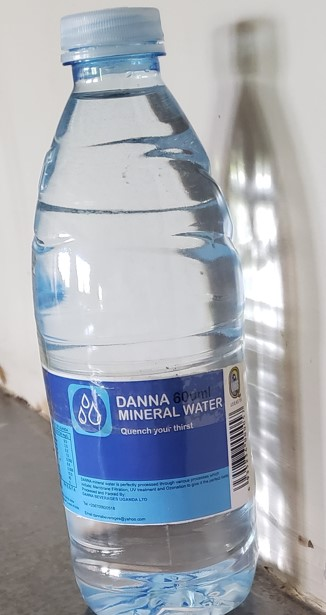

About Us
Founded in 2024, DANNA BEVERAGES is dedicated to providing pure mineral water sourced from natural water sources, filtered through sand filters, activated carbon medium, micron filters, UV treatment, and ozonated to inhibit the growth of any biofilm. Our water is naturally filtered and rich in essential minerals, promoting health and wellness We prioritize quality, with rigorous testing and certifications ensuring the highest standards. Our commitment to sustainability drives us to implement eco-friendly practices throughout our production process. At DANNA BEVERAGES, we believe in delivering not just water, but a refreshing experience that supports our customers and community.
OUR MISSION
“We strive to sustainably source and process mineral water that embodies purity and taste, fostering a healthier life style for our customers and cleaner planet”
OUR VISION
“To create a future where every sip of our mineral water contributes to personal health and environmental sustainability, fostering a deeper connection between people and nature”
CORE VALUES
prioritize the highest standards in sourcing, processing and delivering our mineral water to ensure purity and taste
We are committed to environmentally responsible practices that protect water sources and reduce our ecological foot print
We conduct our business with transparency and honesty building trust with our customers, partners and communities
We embrace new technologies and methods to enhance our processes and product offerings while maintaining commitment to quality
We believe in promoting the health benefits of mineral water and strive to empower our customers to make informed choices
We actively support and engage with our local communities, contributing to their wellbeing and development
We listen to our customers and prioritize their needs ensuring a positive and satisfying experience with our products
“But whoever drinks the water I give them will never thirst. Indeed, the water I give them will become in them a spring of water welling up to eternal life”
“Have you considered the water that you drink? Is it you who brought it down from the clouds, or is it We who bring it down? If we willed, We would make it bitter, so why are you not grateful”
Our Products
Mineral Water
Danna Millet Flour
Danna Yorgurt
Danna White Flour
Our Locations
Head Office
Ground floor, Avenue building , Bunjako close Mpigi town
Kashari Biharwe Town, Plot No 8 Opp Eclipse Monument
Rwenzori Branch
Rubona Town Council along Fortportal Kasese Road, Bunyangabu Distric
News Blog
MEET OUR CEO

"MR. MUSUGA DAN" is our CEO won predistious rewards...
Health Precautions
Water is reach in many different minerals which are important for your body these are....